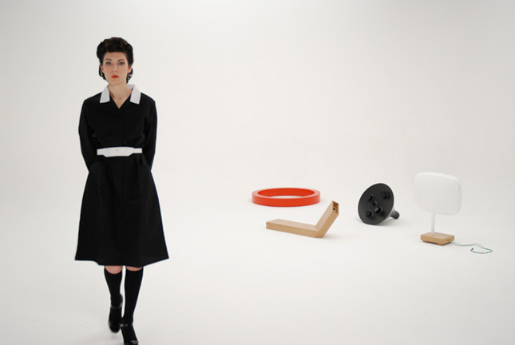
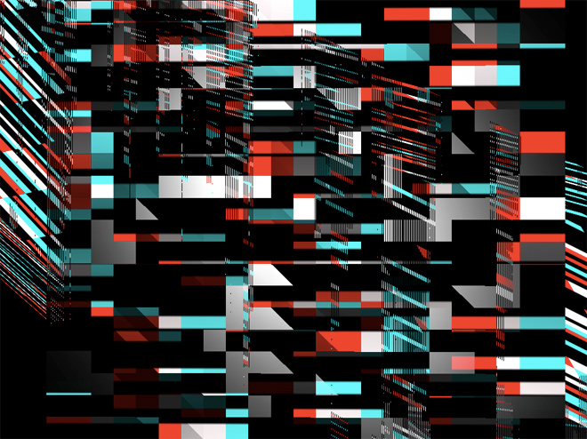

跟随着只言片语，做远方的忠诚的儿子，和物质的短暂情人
本篇是《Speculative Design》第六章“Physical Fictions: Invitations to Make-believe”的阅读笔记。
想象力的道具
在幼儿园的时候，我不是一个爱睡觉的孩子，也不像那些淘气的孩子，在床上折腾，我就那样静静地躺着，最爱看墙上的裂缝。南方潮湿，加上幼儿园里有暖气，越到暖气片的地方，墙上细微的裂缝就越明显，那时候，我似乎能够感觉到脑袋里有种力量在不断成长，午睡的时候，我就那样躺着，把墙壁想象成巨大的迷宫，沿着裂缝走着，甚至发明出自己的游戏，如何走，才能更久地停留在墙壁上，那个时候，无边的想象力在墙上蔓延着。
后来的时候，我会把每次坐在马桶上如厕当成操纵航天器，把皮揣子当成操纵杆，把肥皂当成能量球，冲水即是发射成功，在那样一个狭小的环境里，就像幼儿时的木床，想象力肆意喷张着。
1990年我8岁，父亲第二次带我去北京办理美国签证，那天下着小雨，他把我放在美国大使馆外一个卖纪念品的商店门外，我就坐在台阶上，看房檐上滴下的雨滴，就这样一动不动地抬头看着，那雨滴有时大、有时小、有时从一个大的变成两个小的，我总觉得有个精灵在雨滴之间攀爬着，偶尔从雨滴中也能看见自己，直到老爸沮丧地回来接我，丧气地说再也不去想去美国的事情。
在孩提的时候，我们无力到被安置在一张小小木床、马桶上双脚无法触地、坐在台阶上哪也不敢去，在那样一个环境里，裂缝、马桶、皮揣、肥皂、还有屋檐下滴下的水，都成为燃烧想象力的柴，悄悄一阵风，都能让自己咯咯笑出声来，在无力和限制中，思想才有快乐可言。
这些便是“想象力的道具”，特别是在孩提的时代，玩具所扮演的角色，便是让孩子进入一个虚构的世界，他们不需要相信玩具是否真实，而是去触摸、摔打、和它说话、规划一个虚构的世界，从这个意义上，玩具不是一个消费品。
满足扼杀想象
还记得所有人都懂的“Don't make me think”吗？交互设计理论中最广为流传的一句话应该是消费主义时代最好的表达。这也是消费的根本，你只需要相信和被动接受，消费品会为你搞定你的一切，你不需要思考。而和消费品不同，“虚构道具”（fictional props）的目的是鼓励观者主动思考而非被动消费。这便是道具的作用，它是消费品的反面，它不具备消费品的功用，而是用一种特殊的方式，让观者产生想象（to facilitate imagining）。
一个完美设计的消费品无法让人思考，消费的本质（即“满足”）也与想象力背道而驰，我第一次体会到，扼杀想象的，在某种意义上说，是“满足”。如果没有那张狭小的木床、封闭的卫生间、以及动也不能动的台阶，头脑中那一切记忆深刻的景象变不会有，带来这一切的，是限制。在限制里，被缩小的自我才可能喷发出更强大的精神自我，而所有的消费，都是在消除那些限制、都是在喂那个永远不知饱的自我。没有渺小的自己，就没有超乎寻常的想象。
对现实世界的熟悉、以及越来越增长的能力，我们轻易便可获得世俗的满足，同时也失去了想象的能力。我们所喜爱的、谈论的、分享的都是“满足”，而早已不再与自己说话、忘记思考与想象的乐趣。
以梦为马
虚拟道具若缰绳，它给观者伸出双手的勇气，抛弃对现有世界的固有认识，巧妙打破法则、规律、与习惯，以梦为马，在“自己创造”的疆界中“愉快地”行走，而非生硬地制造一个虚拟的世界。
We prefer viewers to willingly suspend their disbelief and to enjoy shifting their imagination into a new, unfamiliar, and playful space
内部平衡
当一个虚拟世界被建立起来的时候，虚拟道具还需建立一种合理的内部平衡，这种平衡让观者更加持久地行走在那个被建造的虚拟疆界，这又解释了为何限制的条件可以创造更加持久的想象体验，因为真实世界的规则刺激在限制条件下被抑制。
构建系统
“相信”这件事对于人们而言往往是从零散的片段中形成系统的过程，就像相信一段感情已经（或还未）开始、或已经（或还未）结束的时候，人们总在各种行为片段中寻找联系，这些片段所形成的系统，通过一个过程让人们最终相信。因此，好的虚拟道具设计在我认为，应该是存在弱关联、有趣到让人思索弱关联、并能够形成系统的，就像追求姑娘开始的时候，冥冥的联系和忽闪的出现，最终依赖。Dunne & Raby 2007年的作品《科技异梦（Technological Dreams）》所体现的，便是这种冥冥中的若即若离，像是某个虚拟世界的恋人留下的线索。

设计语言
你所希望的，总是建立一种你懂我懂的语言，情感所堆积的那个湿软的世界里，默契的语言总是最好的柔软剂，而在虚拟道具的设计中，设计语言同样重要，它也是表象之下一个特殊的频率（unatural and even glitchy），吸引着观者在一条并未设计的路上爬行。在文中，作者用"Glitchy"来形容设计语言，这个词的含义是“有问题的”，但真正用图片来表现更加生动，下图就是一个glitchy的语言：

最后的最后
有趣的是，当我看见那张glitchy的图片（它是google image搜索glitchy关键字的第一张图）时，我像着迷一样看了它15分钟，这本身就是一件优秀的虚拟道具，在纷迷的碎片中你能看见许多故事，在我的故事里我看见了海边的红色便利店，卖乒乓球拍和冰淇淋，店主一人蹲在门前，苦恼坏掉的冰柜，那些漂亮的冰淇淋就会融化。
当时屯子需要太多的书读，我便帮她读书，书里的世界也成为我们曾经最好的虚拟梦境。这是Speculative Design读书笔记的第6章，也是最后一章，今天我就要把书退还给它的主人、以及帮助我建立这个虚拟世界的人，又一个一直有趣且充满默契的世界慢慢融化，剩下的情感遗物也将消失。
最后的最后，请喜欢此书的人，给我买一本送来，让我继续跟随着只言片语，做远方的忠诚的儿子，和物质的短暂情人。